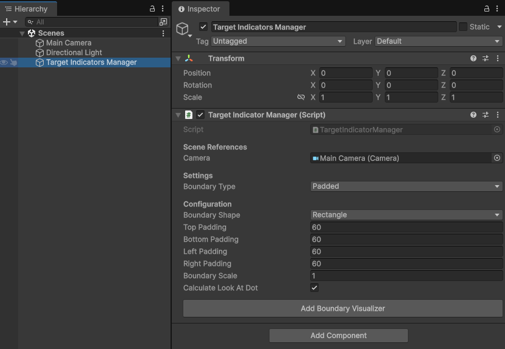
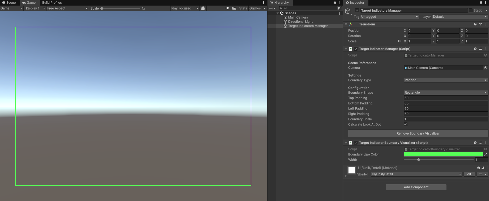
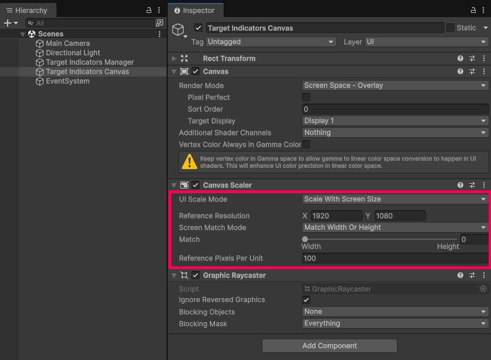
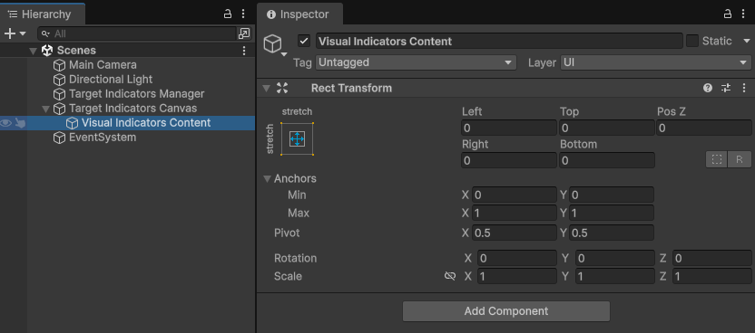
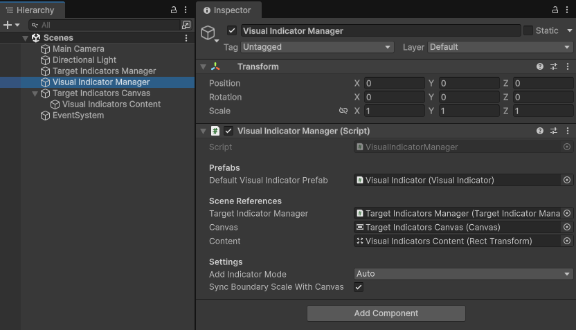
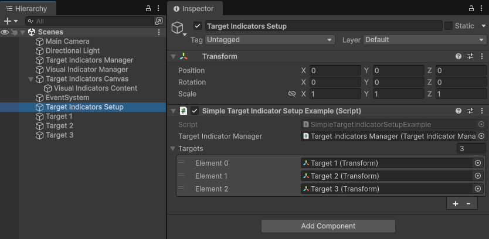
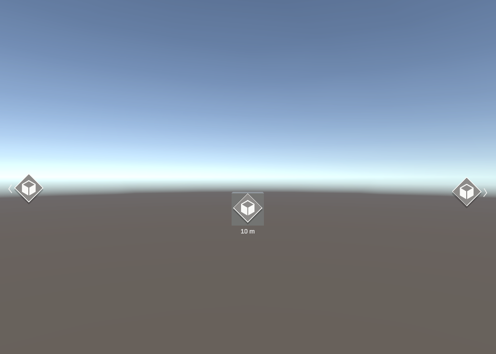
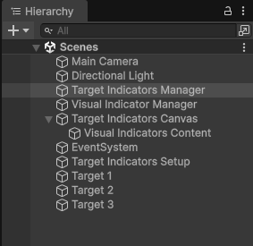

Set up screen indicators
This page walks you through setting up visual indicators that sit on top of your targets while they're on screen, and move to the edge of the screen with an arrow pointing toward them when they're off screen. This is the same setup as the Simple Demo in the sample scenes.
Before you start, complete the steps in Get started to prepare your project and scene.
Set up your scene
Follow these steps in order. Each step links to the page that explains its settings in more detail.
1. Add the Target Indicator Manager
The target indicator manager tracks your targets and calculates a target indicator for each one, which is the data that describes where its visual indicator goes on screen.
- Create an empty GameObject from GameObject > Create Empty and name it
Target Indicators Manager. - In the Inspector, select Add Component and add Target Indicator Manager.
- Check that Camera is set to your scene's camera. The component assigns the camera tagged
MainCameraautomatically. - Leave Boundary Type set to
Paddedand Boundary Shape set toRectangle. - Set Top Padding, Bottom Padding, Left Padding, and Right Padding to
60. The padding keeps visual indicators a short distance inside the edge of the screen so they aren't cut off. If your HUD has elements near an edge, such as a health bar or minimap, increase the padding on that side so the visual indicators don't cover them.

To learn more about each setting, refer to Configure the Target Indicator Manager.
Tip
To see where visual indicators will stop at the edge of the screen, select Add Boundary Visualizer at the bottom of the component. The boundary is drawn as a green outline in the Game view. The outline also appears in builds, so select Remove Boundary Visualizer before you build. For more information, refer to Visualize the boundary.

2. Create the Canvas
Visual indicators are Unity UI elements, so they need a Canvas.
- Create a Canvas from GameObject > UI > Canvas and name it
Target Indicators Canvas. - In the Canvas component, leave Render Mode set to
Screen Space - Overlayso visual indicators always draw on top of the scene. - In the Canvas Scaler component, set UI Scale Mode to
Scale With Screen Sizeand Reference Resolution to1920x1080. This keeps the visual indicators the same size relative to the screen at any resolution.

Next, add the area of the Canvas that holds the visual indicators. It must fill the whole Canvas so that each visual indicator lines up with its target.
- Right-click
Target Indicators Canvasin the Hierarchy, select Create Empty, and name the new GameObjectVisual Indicators Content. - In its Rect Transform, set the following values:
- Anchors Min to X
0, Y0, and Max to X1, Y1. - Pivot to X
0.5, Y0.5. - Left, Top, Right, and Bottom to
0.
- Anchors Min to X

For more information, refer to uGUI indicators.
3. Add the Visual Indicator Manager
The visual indicator manager creates a visual indicator for each target indicator. It instantiates a UI prefab under the Canvas for each target, and updates its position and appearance from the target indicator every frame.
- Create an empty GameObject from GameObject > Create Empty and name it
Visual Indicator Manager. - Select Add Component and add Visual Indicator Manager.
- Set Default Visual Indicator Prefab to the
Visual Indicatorprefab inAssets/Target Indicators/Samples/Core Assets/Prefabs. - Set Target Indicator Manager to the
Target Indicators ManagerGameObject from step 1. - Set Canvas to
Target Indicators Canvas, and Content toVisual Indicators Content. - Leave Add Indicator Mode set to
Auto. In this mode, the visual indicator manager creates a visual indicator for every target you add to the target indicator manager. - Enable Sync Boundary Scale With Canvas. This makes the padding from step 1 scale with the Canvas, so it stays proportional to the visual indicators at every resolution.

To learn more about each setting, refer to Visual indicator manager component.
4. Add your targets
The last step is telling the target indicator manager which targets to track. Start with targets that are already in your scene so you can see the setup working. Then read the next section to track targets that your game creates at runtime, each with its own visual indicator.
To track targets that are already in your scene without writing code, use the setup component from the samples:
- Create an empty GameObject and name it
Target Indicators Setup. - Select Add Component and add Simple Target Indicator Setup Example.
- Set Target Indicator Manager to
Target Indicators Manager. - Add your target objects to the Targets list.
The component starts tracking the targets when the scene starts, and stops tracking them when it's disabled.

Track targets created at runtime
Targets that your game creates at runtime, such as enemies or pickups, don't exist in the scene yet, so you can't add them to a list in the Inspector. Instead, add each target from the script that creates it. That script is already in your scene, so it can keep a reference to the visual indicator manager.
Games often also need a different visual indicator for each kind of target, for example one for enemies and another for pickups. The visual indicator manager supports this in Manual mode, where you add each target together with the visual indicator prefab to use for it. The following example does both. Each target prefab chooses its own visual indicator prefab, and the spawner passes it to the visual indicator manager when it creates the target.
// Add this component to each target prefab, such as an enemy or a pickup, and assign
// the visual indicator prefab that should represent it.
public class TargetVisualIndicator : MonoBehaviour
{
[SerializeField]
[Tooltip("The visual indicator prefab that represents this target on screen.")]
VisualIndicator _visualIndicatorPrefab;
public VisualIndicator VisualIndicatorPrefab => _visualIndicatorPrefab;
}
// Add this component to a GameObject in your scene. It spawns targets and gives each one
// the visual indicator chosen on its prefab.
public class TargetSpawner : MonoBehaviour
{
[SerializeField]
[Tooltip("The Visual Indicator Manager that displays the spawned targets. " +
"Its Add Indicator Mode must be Manual.")]
VisualIndicatorManager _visualIndicatorManager;
public TargetVisualIndicator SpawnTarget(
TargetVisualIndicator targetPrefab, Vector3 position)
{
var target = Instantiate(targetPrefab, position, Quaternion.identity);
// Track the target and create its visual indicator from the prefab it chose.
_visualIndicatorManager.TryAddVisualIndicator(
target.transform, target.VisualIndicatorPrefab, out _);
// When the target is destroyed, it stops being tracked and its visual indicator
// is removed automatically.
return target;
}
}
To use the example:
- Create two scripts named
TargetVisualIndicator.csandTargetSpawner.cs, and copy each class into its own script. - Add Target Visual Indicator to each target prefab, and set Visual Indicator Prefab to the visual indicator prefab for that kind of target.
- Add Target Spawner to a GameObject in your scene, and set its Visual Indicator Manager field.
- On the Visual Indicator Manager, set Add Indicator Mode to
Manual. - Call
SpawnTargetfrom your game code with the target prefab and a position.
You don't need to remove targets when they're destroyed. They stop being tracked automatically, and their visual indicators are removed. If you disable a target or return it to an object pool instead of destroying it, keep the TargetIndicatorId from TryAddVisualIndicator and pass it to RemoveTargetIndicator.
In Manual mode, the visual indicator manager only shows targets that you add through it. If you also track targets in your scene, add them with TryAddVisualIndicator too. For details, refer to Manual mode. To create your own visual indicator prefabs, refer to Set up a prefab.
5. Try it in Play mode
Enter Play mode. A visual indicator appears on top of each target that's on screen. For targets that are off screen, the visual indicator sits at the edge of the screen with an arrow pointing toward the target.
To check that the visual indicators follow their targets, select the camera in the Hierarchy and change its Y rotation in the Inspector. As targets leave the view, their visual indicators move to the edge of the screen. When you look almost directly at a target, its distance appears below the visual indicator.

Your Hierarchy now looks like this:

If visual indicators don't appear
If no visual indicators appear in Play mode, check the following:
- The Console has no errors. A missing field on the Visual Indicator Manager causes errors when you enter Play mode.
- Add Indicator Mode is set to
Auto. InManualmode, the visual indicator manager only shows targets that you add through its ownTryAddVisualIndicatormethod. Visual Indicators Contentfills the whole Canvas, and the Canvas usesScreen Space - Overlay. Otherwise, visual indicators appear in the wrong place.- If the visual indicators show no distance text, import the TextMeshPro essentials from Window > TextMeshPro > Import TMP Essential Resources.
Next steps
Now that you have working visual indicators, you can customize them for your project. You can change where visual indicators stop at the edge of the screen with a different boundary type or shape, run multiple target indicator managers for different categories of targets, or add a compass tape. To build your own visual indicators with any UI system, refer to uGUI indicators and the Target Indicator Manager API.